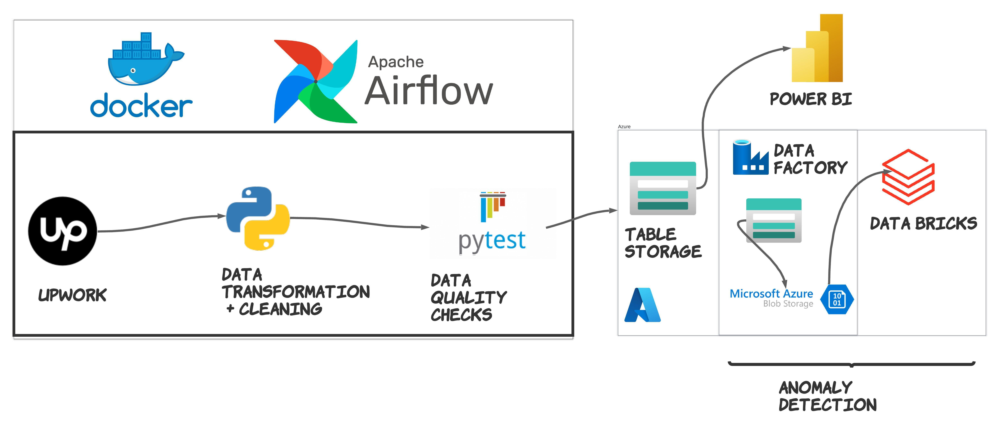
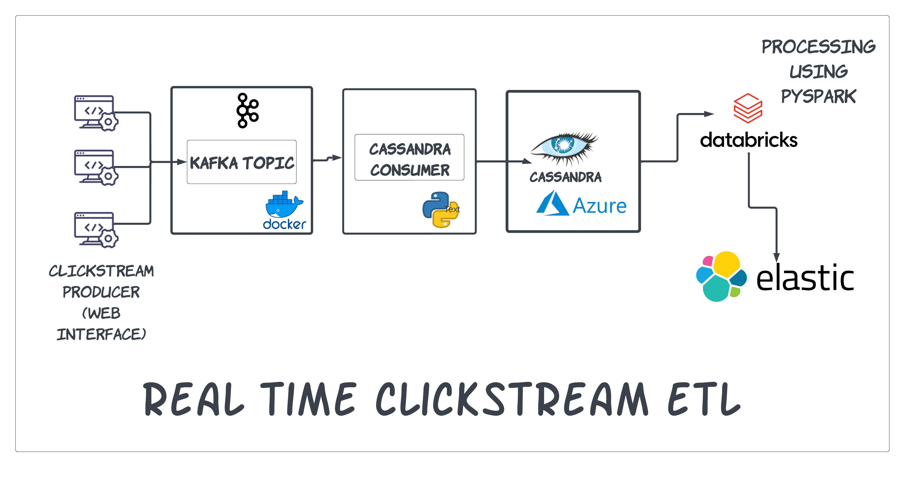

Projects


RealtimeClickStreamETL
Clickstream ETL (Extract, Transform, Load) pipeline designed to consume real-time data from a Kafka and Zookeeper cluster. The pipeline utilizes Python for initial data processing and enrichment before storing the raw clickstream data in Apache Cassandra. The raw data in Cassandra is then processed and enriched using PySpark on Databricks to perform complex transformations. Finally, the processed data is stored in Elasticsearch for efficient querying and analysis.
- Python
- Docker
- Azure Databricks (Pyspark)
- Apache Cassandra
- Elasticsearch